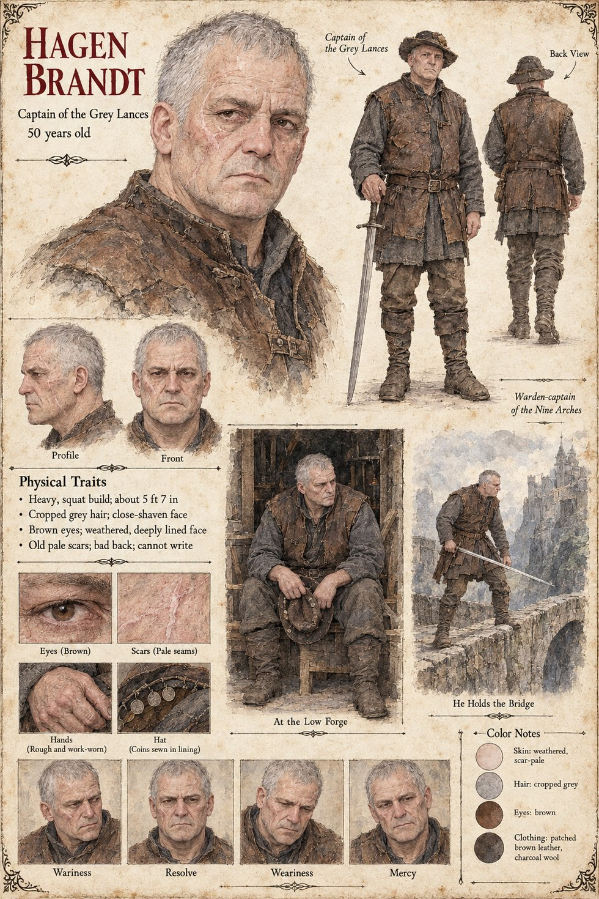

Hagen Brandt
Captain of the Grey Lances for twenty-eight years · warden-captain of the Nine Arches · 50 years old
A heavy, squat man of fifty, about 5 ft 7 in, with cropped grey hair, a close-shaven, weathered, deeply lined face, brown eyes, old pale scars and a bad back, and, his sheet adds, no writing. He is the captain of the Grey Lances, the mercenary company of eighty whose clerk is Wido: at the Salt Landing in the third week of Lorren he puts his mark to the Duke of Tarnwald's contract with the eighty-first name still to be entered, and the last of his sheet's physical notes is that he cannot write. On the Uncounted night the Company sits in the mud at the door of the Low Forge with its captain in the lintel, and when Gerold says that he has the Duke's order to take the household and would thank the Company to stand up, Brandt answers We are nobody's, and we are sitting. Wido's page has him ask the clerk what day it is, hear that it is the Uncounted and that no contract can be signed upon it, and sit down on the threshold, the eighty lances sitting after him. When the Order of the Hundred and Forty-Four is founded he lends Wido to the Crown for the day and does not get him back. His sergeant is Ragnulf, and the One-eyed Lombard is a lance of the Company. The publication notes give him twenty-eight years in command, and have him offer Higaide a post with the words I pay by the day, and I don't ask what a man swore, keep the Company out from under roofs, and take off his hat for no one but the foreigner and the Countess.
The sheet's scene At the Low Forge draws him on a plain chair in a timbered doorway, a battered hat held on his knees; its close-up, Hat (Coins sewn in lining), shows three coins stitched into the lining. The other, He Holds the Bridge, draws him braced on the parapet of an arched stone bridge with a long sword in his hands and a castle on a cliff behind, and a label beside it reads Warden-captain of the Nine Arches. The Nine Arches are the bridge whose gate-tower, at its north head, is where Gerold's page puts the Duke's gate-guard; the publication notes put the post in Chapter 18 and do not say what holding the bridge costs him.
His expression panels run Wariness, Resolve, Weariness and Mercy. Written from the sheet, from what the other Case 4181 pages already say, and from the character notes in the case's publication-prep file; the manuscript itself was not to hand. His age of 50, squat heavy build, cropped grey hair, brown eyes, rough work-worn hands, patched brown leather over charcoal wool and brimmed hat are the sheet's own.
Appears In

Related Subjects


Related Records

On the Uncounted night the Grey Lances sit in the mud before the Low Forge with their spears grounded, and Hagen Brandt sits on the threshold with two swords laid beside him, hilts to the road; Higaide stands bareheaded in the doorway with empty hands, bowing, with Lantfrid and the ox Brun behind him. We are nobody's, says the captain, and we are sitting.

At the crown of the bridge Higaide stands with a sword lowered in each hand and a stain on his sleeve that is not his own, while thirty-four unhorsed knights of Tarnwald sit along the parapet with their hands held out before them and the Grey Lances stand in a double line behind him; the Duke, Waldo, rides slowly toward him with a long blue curtain across his saddle-bow, and far down at the south head Adalgund waits with an oiled bundle in the crook of her arm.